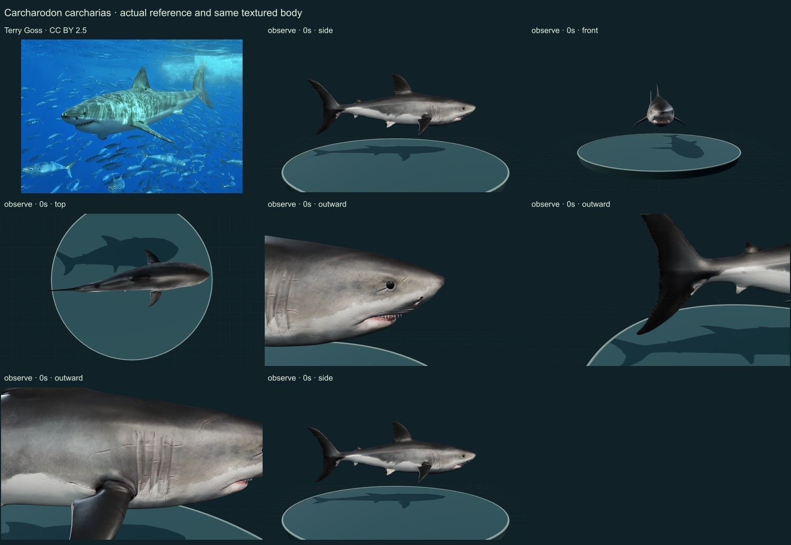
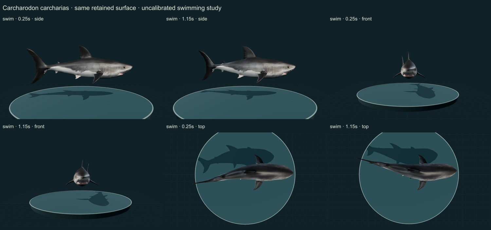

RELEASE 0.6.28 · INITIAL STUDY · 25 OCTOBER 2026
White shark
Carcharodon carcharias
13 actual final rendered states and two credited sheets inspected. This is an automated editorial comparison, without independent specialist review, measured geometry, validated biomechanics or an accuracy percentage.
Body
The source provides a robust fusiform body, conical snout, large first dorsal fin, small second dorsal/anal fins, five gill openings and crescent caudal fin. Its tooth rows, serrations, jaw tissue and exact fin/body ratios remain simplified; the model is not fitted to the photographed individual.
Surface
Material conversion restored the source countershading, scars and fine normal detail. The white ventral boundary is preserved across swimming. Some scars and fine textures are conspicuous artistic choices, and denticle microanatomy is unresolved.
Movement
The retained creator skeleton and Swimming clip use lateral propulsion. Two substantially different phases were viewed from side/front/top. Mouth and body mechanics are not calibrated; archived Circling/Biting clips were not relabelled as complete biological behaviors.
Changes
- Converted the legacy source material to supported PBR while preserving mesh positions, UVs, joints, weights and three source clip channel sets.
- Mapped only the creator Swimming clip to the supported motion control.
- Kept the same body airborne above the aquatic specimen desk in Observe and Swim.
- Added authentic Terry Goss photograph and Smithsonian STRI species-account context.
Actual comparison screenshots
Side, front and top views; two swimming phases at 0.25 and 1.15 display seconds; three approximate outward anatomy foci; Observe reset. Detail views show selected regions, not complete orthogonal anatomy. The photograph shows a different individual.


Remaining limitations
- Source clip timing and fin flexibility have not been compared to a fitted measured sequence.
- Teeth, dermal denticles, ventilation and prey-contact mechanics remain incomplete.
- No claim of measured speed, force, energetics or validated hunting.
Full original photograph downloaded; source and delivered checksums recorded.
Source and access scope
- Smithsonian Tropical Research Institute white-shark species account — Selected morphology, ecological and behavioral account read; not a Smithsonian collection determination or calibrated model validation.
- GBIF accepted species-level linkage — Exact accepted species-rank linkage; not a determination of the artist mesh or photograph.
- Variability in the burst behaviour of the white shark (2025) — Selected primary study context only; no source trajectories or biomechanical parameters have been fitted to the model.
- Licensed authentic organism reference — Photographer/Commons species association and visibly compatible diagnostic outline; no independent specimen determination or measured model fit.
- Animated Swimming Great White Shark Loop by LasquetiSpice — Credited CC BY 4.0 artist mesh, retrieved without sign-in through the Objaverse archive. Artist title is not independent biological identification.

Machine-readable evidence, grants and checksums · Open the same specimen · Release review